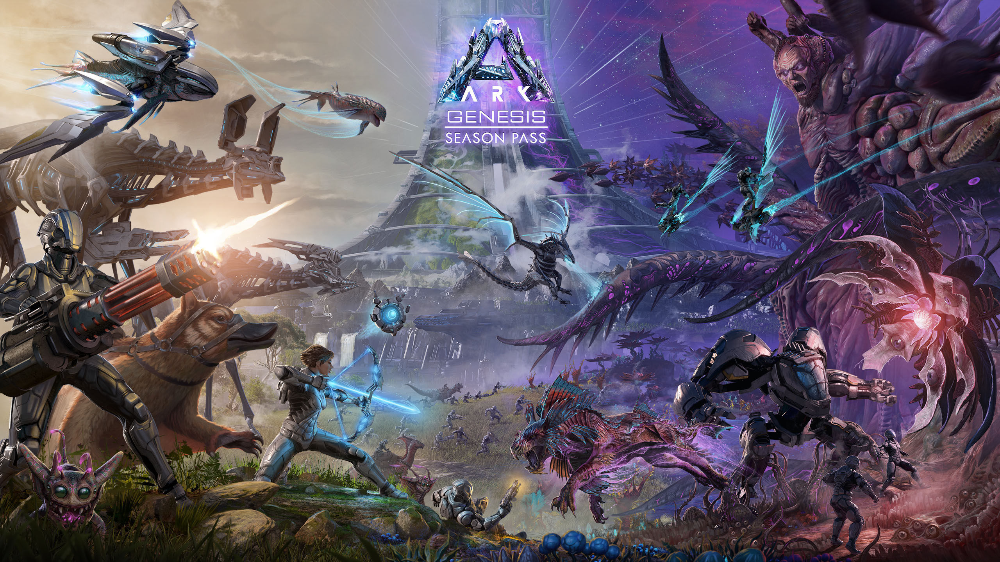
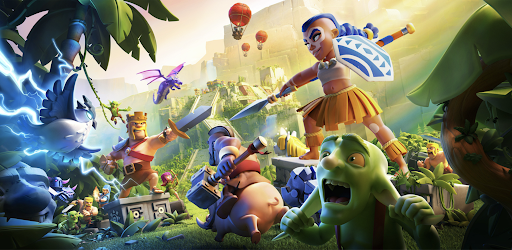

Warzone es un videojuego de disparos en primera persona, perteneciente al Battle royale gratuito, lanzado el 10 de marzo de 2020 para PlayStation 4, PlayStation 5, Xbox One, Xbox Series X|S y Microsoft Windows.
Ark: Survival Evolved es un videojuego de acción-aventura y supervivencia desarrollado por Studio Wildcard, Instinct Games, Efecto Studio y Virtual Basement. Lanzado oficialmente el 29 de agosto de 2017 para Windows, Xbox One, Nintendo Switch, PlayStation 4, IOS y Android.

Clash of Clans, también conocido como CoC, es un videojuego de estrategia y de construcción de aldeas en línea, para dispositivos móviles con plataformas de IOS y Android. Fue desarrollado por Supercell y lanzado para IOS el 2 de agosto del 2012 y el 30 de septiembre para Android
